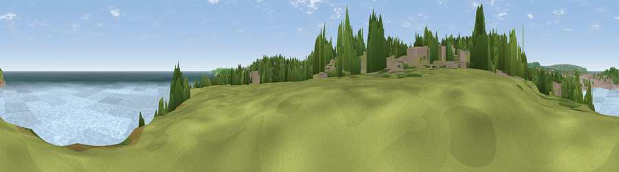

Viewpoint near Scarborough
#14266 in England · top 32% of its area beats it · near ScarboroughThe view, rendered

A 360° render of this exact spot computed from the terrain model, tree cover and land cover — summer colours, afternoon light, calibrated against photographs of famous viewpoints. Real trees, hedges and buildings will differ in detail.
The panorama
Grey silhouette: terrain skyline in each direction (720 bearings, Earth curvature and refraction included). Dashed green: skyline with trees (+15 m) and buildings (+8 m) as obstacles. Blue strip: how far the ground is visible on each bearing.
Where the view opens
Wedge length = distance to the farthest visible ground on that bearing (vegetation-aware). Rings at 10, 25 and 50 km.
What fills the view
71% water · 12% woodland · 9% grassland · 6% built-up · 2% cropland
Angular shares of the visible panorama (visual magnitude), not map area. Landscape diversity 0.43 (0–1 Shannon).
Key numbers
More beautiful places nearby
The staircase of upgrades: each row has a higher view potential than everything closer. Driving times are estimates from straight-line distance, calibrated against real road routing — check an actual route before setting out.
| Place | Direction | Drive | Score |
|---|---|---|---|
| Viewpoint near Osgodby | ESE · 1 km | ~2 min | 58.6 |
| Viewpoint near Osgodby | SSW · 1 km | ~2 min | 75.6 |
| Olivers Mount | WNW · 1 km | ~3 min | 80.3 |
| Viewpoint near Ravenscar | NNW · 16 km | ~28 min | 82.7 |
| Viewpoint near Ravenscar | NNW · 17 km | ~30 min | 87.3 |
| Viewpoint near Ravenscar | NNW · 18 km | ~31 min | 90.0 |
| Viewpoint near Easington | NW · 45 km | ~66 min | 90.2 |
| The Knoll | SSW · 426 km | ~402 min | 91.0 |
54.26359, -0.38752 · source: screening · position refined by local search. Computed location — check access rights before visiting.